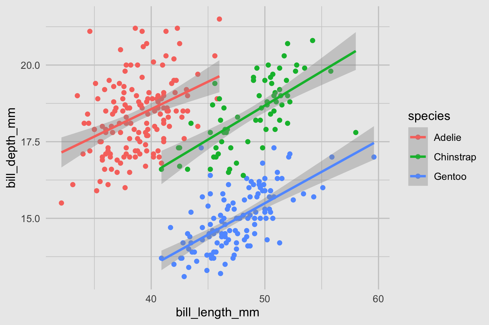

Beautify Your Scientific Figures
Daniel Roelfs
Remember
DATA GOES BEFORE AESTHETICS


# ggplot
ggplot(penguins, aes(x = bill_length_mm, y = bill_depth_mm, color = species)) +
geom_point()
# matplotlib
colors = {'Adelie':'red', 'Gentoo':'blue', 'Chinstrap':'green'}
plt.scatter(penguins['bill_length_mm'], penguins['bill_depth_mm'],
c=penguins['species'].apply(lambda x: colors[x]))
plt.show()
# MATLAB
species = categorical(penguins.species);
color_idx = grp2idx(species);
scatter(penguins.bill_length_mm, penguins.bill_depth_mm, [], color_idx, 'filled')
# ggplot
ggplot(penguins, aes(x = bill_length_mm, y = bill_depth_mm, color = species)) +
geom_point()
# matplotlib
colors = {'Adelie':'red', 'Gentoo':'blue', 'Chinstrap':'green'}
plt.scatter(penguins['bill_length_mm'], penguins['bill_depth_mm'],
c=penguins['species'].apply(lambda x: colors[x]))
plt.show()
# MATLAB
species = categorical(penguins.species);
color_idx = grp2idx(species);
scatter(penguins.bill_length_mm, penguins.bill_depth_mm, [], color_idx, 'filled')
# ggplot
ggplot(penguins, aes(x = bill_length_mm, y = bill_depth_mm, color = species)) +
geom_point()
# matplotlib
colors = {'Adelie':'red', 'Gentoo':'blue', 'Chinstrap':'green'}
plt.scatter(penguins['bill_length_mm'], penguins['bill_depth_mm'],
c=penguins['species'].apply(lambda x: colors[x]))
plt.show()
# MATLAB
species = categorical(penguins.species);
color_idx = grp2idx(species);
scatter(penguins.bill_length_mm, penguins.bill_depth_mm, [], color_idx, 'filled')
DATA VISUALIZATION
is part art and part scienceArtistic vs scientific, a conflict?


Remember
DATA GOES BEFORE AESTHETICS

My setup
### CREATE MY SCIENTIFIC FIGURE ########################
#-- Libraries -------------------------
library(tidyverse)
library(ggtext)
library(patchwork)
library(normentR)
#-- Load data -------------------------
data <- read_table("files/some_data_file.txt")
etc...
{tidyverse}includes{ggplot2},{dplyr}, and{tidyr}{ggtext}allows advanced text rendering in plots (easy bold, color, scientific notation etc.){patchwork}lets users easily combine individual plots to create a complex figure{normentR}contains a better default theme, scientific color schemes, and NORMENT colors- (Occasionally I use
{cowplot}for some advanced figure editing and composing)
COLORS
Only one point:
use scientific color maps
- Created by Fabio Crameri from UiO
- Implemented in both the
{scico}package and the{normentR}package

Biostats examples
The essentials...
Tutorials for both of these at danielroelfs.com
PleioFDR QQ-plots
PleioFDR TDR-plots
PleioFDR enrichment plots
MOSTest QQ plots
MOSTest QQ plots (from sumstats)
GOAL
Communicate a message clearly and efficiently
Remember
DATA GOES BEFORE AESTHETICS
Resources
- Fabio Crameri, "Scientific use of colour in science communication"
YouTube (first 15 mins are most relevant) | Corresponding paper - Cédric Scherer, "{ggplot2} Wizardry" (UseR Oslo)
YouTube | Slides - Thomas Lin Pedersen, "ggplot2 workshop" (RStudio)
YouTube | Slides & Exercises